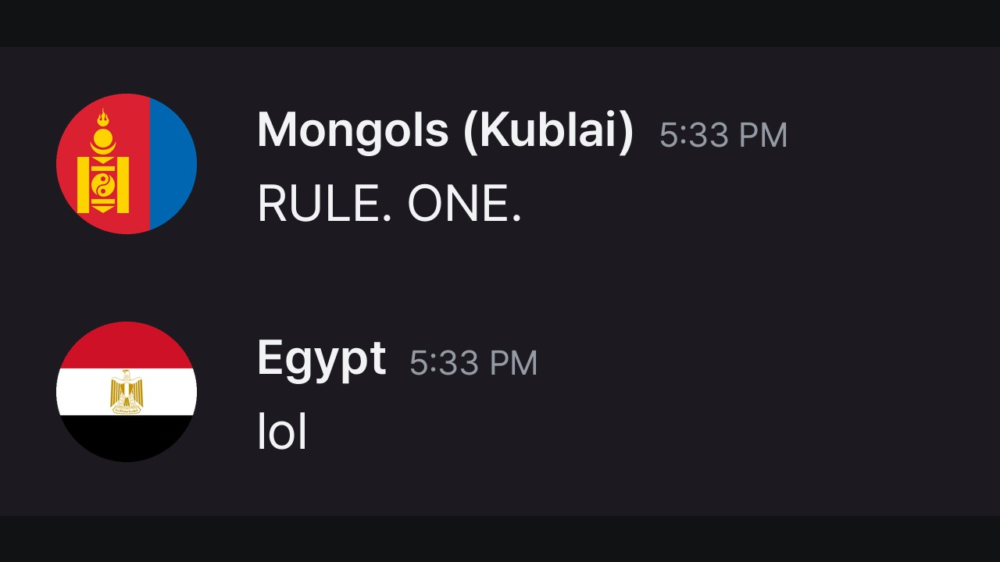

몽골 제국 단톡방, 완성본 판정
국기 아바타와 새 썸네일이 들어간 최종본입니다. 아래 1분 비교로 본보기와 같은 느낌인지 보고, 그 밑의 전체 영상과 제목·설명까지 본 뒤 합격 여부를 말씀해 주세요. 영어 재미는 판단하지 않으셔도 됩니다.
재생하면 지금 줄의 뜻이 여기에 나옵니다.
남의 영상을 잘라 넣은 비교용 페이지입니다. 링크를 밖으로 공유하지 마세요.
완성본 전체 15분 15초
올릴 파일 그대로입니다. 페이지 용량 때문에 5토막으로 나눴고, 한 토막이 끝나면 다음 토막이 이어서 나옵니다.
먼저 봐 주실 곳
올릴 제목·설명·썸네일

TITLE: IF THE MONGOL EMPIRE WAS A DISCORD CHAT (HISTORICALLY ACCURATE) DESCRIPTION: The Mongol Empire as one giant group chat, from Genghis Khan's one rule to the last horde. Covers: 1206 unification, Khwarazm and the mailman rule, Kyiv, Baghdad, Kublai's fleets, and the last standoff in 1480. Historically accurate-ish: every event happened, the chat didn't. 0:00 1206 · One rule 0:25 1209 1:13 1211 1:36 1215. Zhongdu has fallen. 1:48 1218 3:34 1221 4:23 1223 5:31 1227 6:21 1234 6:47 1237 7:21 6 December 1240. Kyiv has fallen. 7:27 1241 8:56 December 1241 9:22 1246 9:46 1254 10:22 1258 11:02 1259 11:50 3 September 1260 12:15 1264 12:36 1266 13:08 1279 13:29 1281 14:08 1346 14:23 1368 14:32 1480 Music: Kevin MacLeod (incompetech.com), licensed under CC BY 4.0: Fluffing a Duck, Funkorama, Hitman, March of the Spoons, Parisian, Sneaky Snitch, Volatile Reaction. Images via Wikimedia Commons: YuanEmperorAlbumGenghisPortrait (Public domain); Mongolian Empire Letter from Guyug Khaan to Pope Innocent IV (Copy) (35321741520) (CC0); Jalal al-Din Khwarazm-Shah crossing the rapid Indus river, escaping Chinggis Khan and his army (Public domain); YuanEmperorAlbumKhubilaiPortrait (Public domain); Battle of Legnica1241-From Legend of Saint Hedwig (Public domain); Mōko Shūrai Ekotoba 2 (Public domain); Mongol Conquest of Baghdad (Public domain); Karakorum Silver Tree (Public domain); Facial Chronicle - b.16, p. 462 - Great standing on the Ugra (Public domain). HASHTAGS: #history #mongols #genghiskhan #historymemes #medieval
잰 숫자
| 항목 | 본보기 | 우리 샘플 |
|---|---|---|
| 메시지 속도 | 분당 약 40개(편 전체) | 첫 1분 36개, 편 전체 분당 34개 |
| 1분 안의 화면 전환(같은 기준) | 42회 | 42회 |
| 음량 | -11.8 LUFS(첫 1분) | -14.0 LUFS(첫 1분), 편 전체 -14.3 |
| 목소리 | 없음 | 없음 |
| 메시지 팝 소리 | 있음(약 0.09초, 900Hz대) | 있음(약 0.12초, 500Hz대) |
| 소리 높낮이 분포 440·587·1760·2347Hz(전체 대비 dB, 같은 계산) | -15.2 · -19.2 · -27.2 · -24.6 | -16.6 · -19.1 · -25.3 · -25.1 |
| 첫 1분에 음악이 끊기는 곳(소리 -40dB 아래 0.3초 이상) | 3곳, 0.35~0.65초 | 0곳 |
| 편 전체 0.8초 넘는 무음(-40dB 아래) | 본보기 6편: 2~54곳, 영상의 0.3~6.4% | 55곳, 영상의 8.6%, 최장 3.0초 |
본보기와 다른 점, 아직 임시인 것
- 첫 줄을 «왜 내 서버에 초원에서 온 놈이 있어»로 바꿨습니다. 본보기가 첫 메시지부터 갈등으로 시작해서 맞췄습니다.
- 연도는 메시지 시각 자리가 아니라 1209 같은 큰 카드로 보여 줍니다.
- 짤은 남의 밈을 쓰지 않고 우리가 그린 그림입니다(FLUX.1-schnell, Apache 2.0).
- 소리는 전부 바꿨습니다. 메시지 소리와 효과음은 무료 번들(MIT)과 CC0, 밈 목소리는 Fish 무료 모델입니다. 이전 샘플과 다르게 들립니다.
- 음악은 Kevin MacLeod의 Hitman, Sneaky Snitch, Funkorama, March of the Spoons, Fluffing a Duck(CC BY)입니다. 본보기가 쓰는 곡과는 다르고, 올릴 때 설명란에 출처를 적습니다.
- 지도는 우리가 만든 지도입니다.
- 화자 아바타는 국기입니다. 지금 나라가 이어받은 경우 그 국기를 쓰고, 이어받은 나라가 없는 금·서하만 옛 문양, 공식 안내와 역사가 줄만 이모지입니다.
- 첫 1분에는 음악이 끊기지 않고 본보기는 3번 끊깁니다. 편 뒤쪽에서는 일부러 음악을 멈춘 긴 구간이 많아, 0.8초 넘는 무음 비율이 본보기 6편의 최고치(6.4%)보다 높습니다.
우리 샘플 대사
줄을 누르면 그 자리로 이동합니다.